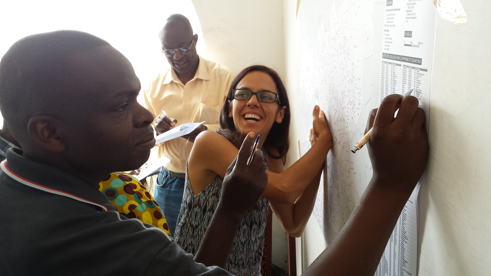

Goal 17 - Partnerships
Download page as PDFRevitalize the global partnership for sustainable development
“A successful sustainable development agenda requires partnerships between governments, the private sector and civil society. These inclusive partnerships built upon principles and values, a shared vision, and shared goals that place people and the planet at the centre, are needed at the global, regional, national and local level."

The active participation in Communities of Practice (CoP), including particularily governments, private sector and civil society strenghens partnerships for equal development and diverse approach for creative solutions. CoP requires three conditions, (1) a shared domain, (2) a community pursuing their interest in their domain and strategically exchange with others and (3) a practice that develops “a shared repertoire of resources: experiences, stories, tools, ways of addressing recurring problems—in short a shared practice” (Wenger-Trayner et. al. 2015). Open Data and Free and Open Source communities by default are communities of practice and support directly the approach described in SDG 17.
What has been done?
The Humanitarian OpenStreetMap Team is a collaborative bridge between the OpenStreetMap community and humanitarian organizations, governmental insitutions, private companies and individual volunteers. The core of the work is open collaboration for humanitarian actions and world-wide economic development. All data created is Open Data for the OpenStreetMap project and is used by many other actors. HOT provides open source tools and data, training and expertise to help partners get started within the community of practice and improve the way they use technology and open map data in their organisations.
What else can be done?
- Support local communities around Open Data, Free and Open Source Software and in particular OpenStreetMap.
- Promote entrepreneurship around Open Technologies.
- Live active collaboration and engage with diverse experts across disciplines, countries and industries
- Understand how your work fits into the global development landscape
- Adopt and expand on existing open standards
- Develop new software code to be open source
- Invest in software as a public good